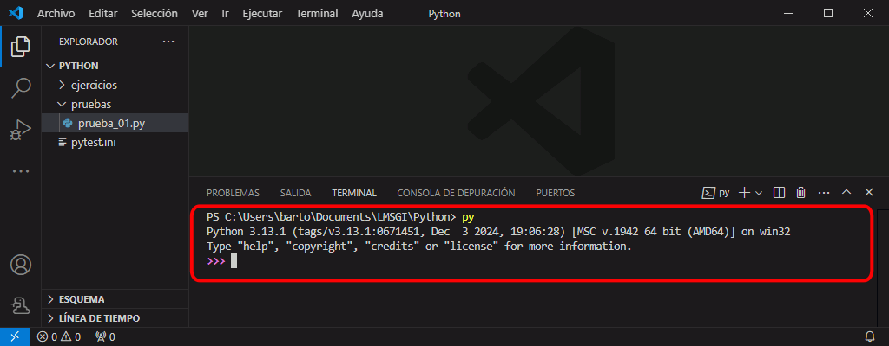

Los programas de Python se ejecutan normalmente en un terminal (o una ventana de terminal de Windows), como se comenta en la lección Ejecutar programas. Los programas son ejecutados por el intérprete de Python. Pero al instalar Python también se instala un entorno interactivo de Python que permite ejecutar instrucciones sueltas.
En las lecciones sobre el lenguaje Python de estos apuntes, los ejemplos se muestran a veces en forma de programas y a veces en forma de entorno interactivo.
En las páginas de ejercicios de estos apuntes:
Se puede acceder al entorno interactivo de Python en una ventana de terminal o en una ventana de IDLE.
Para entrar en el entorno interactivo de Python, abra una ventana de terminal (CMD, PowerShell, etc.) y escriba python o simplemente py:
C:\Users\barto>python
Python 3.13.1 (tags/v3.13.1:0671451, Dec 3 2024, 19:06:28) [MSC v.1942 64 bit (AMD64)] on win32
Type "help", "copyright", "credits" or "license" for more information.
>>>
La primera línea nos indica la versión de Python que tenemos instalada.
El símbolo de petición >>> (en inglés, prompt) nos indica que podemos escribir una instrucción de Python. Si escribimos una instrucción y pulsamos Intro, Python ejecutará la instrucción, escribirá el resultado de la ejecución y volverá a mostrar el prompt, como muestra el siguiente ejemplo:
C:\Users\barto>python
Python 3.13.1 (tags/v3.13.1:0671451, Dec 3 2024, 19:06:28) [MSC v.1942 64 bit (AMD64)] on win32
Type "help", "copyright", "credits" or "license" for more information.
>>> 3 * 4
12
>>>
Podemos escribir varias líneas antes de ejecutarlas si las instrucciones lo requieren. Para indicarlo, el entorno interactivo añade tres puntos al principio de la línea, en vez del prompt. LAs líneas se ejecutan cuando dejamos una línea en blanco y pulsamos Intro.
>>> for i in range(3):
... print(i)
...
0
1
2
>>>
Si escribimos una instrucción incorrecta, Python nos mostrará el mensaje correspondiente:
>>> 3 4
File , line
3
:
>>>
En algunos errores, el mensaje de error menciona el Traceback, que aporta información adicional sobre el orrigen del error:
>>> x
Traceback (most recent call last):
File , line in
x
:
>>>
Podemos recorrer la lista de instrucciones ya ejecutadas pulsando las teclas Flecha arriba y Flecha abajo. Una vez recuperada una instrucción, podemos modificarla si fuera necesario y pulsar Intro para ejecutarla.
Para salir del entorno interactivo, cierre la ventana de terminal, pulse el atajo de teclado Ctrl+d o escriba exit:
C:\Users\barto>python
Python 3.13.1 (tags/v3.13.1:0671451, Dec 3 2024, 19:06:28) [MSC v.1942 64 bit (AMD64)] on win32
Type "help", "copyright", "credits" or "license" for more information.
>>> exit
C:\Users\barto>
Para abrir una ventana de panel en la pestaña Terminal puede elegir la opción del menú , puede utilizar el atajo estándar Ctrl+Mayús+ñ o puede utilizar el atajo definido en el perfil recomendado Ctrl+Alt+t Ctrl+Alt+p. El panel se abrirá en la parte inferior de la ventana de Visual Studio Code. El cursor se colocará en el panel.
Para abrir el entorno interactivo de Python, escriba python o simplemente py. A continuación podrá escribir comandos o expresiones de Python.

Para pegar texto en el entorno interactivo, recuerde que el atajo que utiliza Visual Studio Code es Ctrl+Mayús+v.
Tenga en cuenta que si ejecuta un programa con los atajos Ctrl+Alt+F5 o Ctrl+Alt+Mayús+F5 cuando en el terminal está abierto el entorno interactivo, se mostrará un error. Para poder ejecutar programas con los atajos, debe salir primero del entorno interactivo o terminar el terminal (cerrar el Panel no es suficiente, porque al volver a abrir el panel, el entorno interactivo se mantiene).
IDLE es un entorno gráfico de programación elemental que en Windows se instala cuando se instala python pero que en Linux se debe instalar como una aplicación más.
Al abrir IDLE, la propia ventana es el entorno interactivo, como se explica en la lección IDLE, entorno de desarrollo.